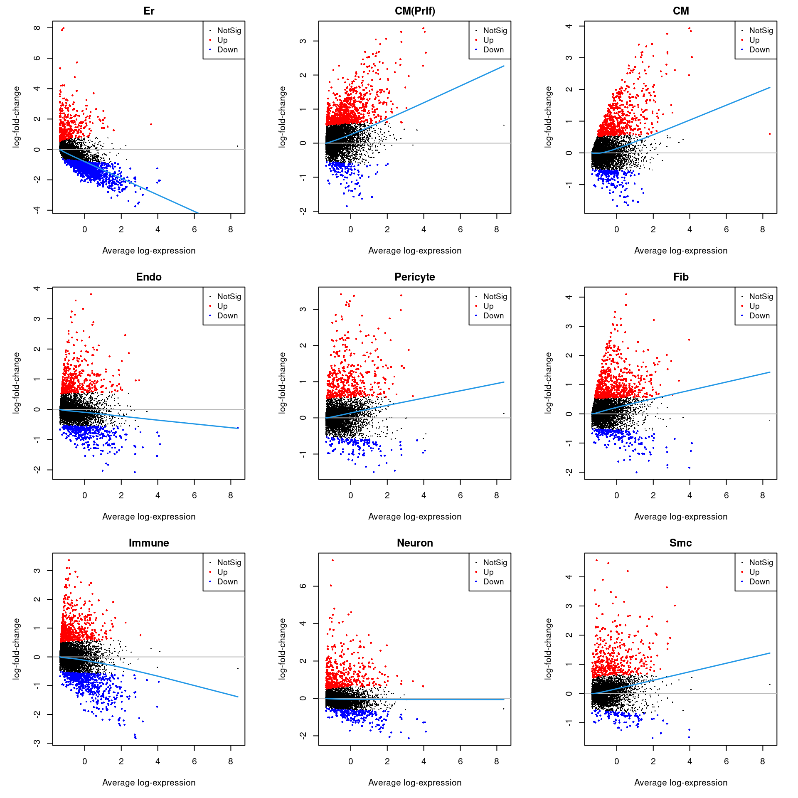
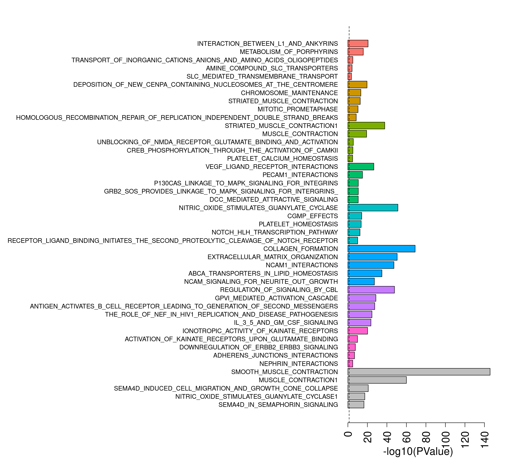

Last updated: 2022-04-07
Checks: 7 0
Knit directory:
Fetal-Gene-Program-snRNAseq/
This reproducible R Markdown analysis was created with workflowr (version 1.7.0). The Checks tab describes the reproducibility checks that were applied when the results were created. The Past versions tab lists the development history.
Great! Since the R Markdown file has been committed to the Git repository, you know the exact version of the code that produced these results.
Great job! The global environment was empty. Objects defined in the global environment can affect the analysis in your R Markdown file in unknown ways. For reproduciblity it’s best to always run the code in an empty environment.
The command set.seed(20220406) was run prior to running
the code in the R Markdown file. Setting a seed ensures that any results
that rely on randomness, e.g. subsampling or permutations, are
reproducible.
Great job! Recording the operating system, R version, and package versions is critical for reproducibility.
Nice! There were no cached chunks for this analysis, so you can be confident that you successfully produced the results during this run.
Great job! Using relative paths to the files within your workflowr project makes it easier to run your code on other machines.
Great! You are using Git for version control. Tracking code development and connecting the code version to the results is critical for reproducibility.
The results in this page were generated with repository version 78db7d6. See the Past versions tab to see a history of the changes made to the R Markdown and HTML files.
Note that you need to be careful to ensure that all relevant files for
the analysis have been committed to Git prior to generating the results
(you can use wflow_publish or
wflow_git_commit). workflowr only checks the R Markdown
file, but you know if there are other scripts or data files that it
depends on. Below is the status of the Git repository when the results
were generated:
working directory clean
Note that any generated files, e.g. HTML, png, CSS, etc., are not included in this status report because it is ok for generated content to have uncommitted changes.
These are the previous versions of the repository in which changes were
made to the R Markdown (analysis/03-MarkerAnalysisBCT.Rmd)
and HTML (docs/03-MarkerAnalysisBCT.html) files. If you’ve
configured a remote Git repository (see ?wflow_git_remote),
click on the hyperlinks in the table below to view the files as they
were in that past version.
| File | Version | Author | Date | Message |
|---|---|---|---|---|
| Rmd | 78db7d6 | neda-mehdiabadi | 2022-04-07 | wflow_publish(c("analysis/Rmd", "data/txt", "data/README.md", |
library(edgeR)
library(RColorBrewer)
library(org.Hs.eg.db)
library(limma)
library(Seurat)
library(cowplot)
library(DelayedArray)
library(scran)
library(NMF)
library(workflowr)
library(ggplot2)
library(clustree)
library(dplyr)
library(gridBase)
library(grid)
library(speckle)targets <- read.delim("data/targets.txt",header=TRUE, stringsAsFactors = FALSE)
targets$FileName2 <- paste(targets$FileName,"/",sep="")
targets$Group_ID2 <- gsub("LV_","",targets$Group_ID)
group <- c("fetal_1","fetal_2","fetal_3",
"non-diseased_1","non-diseased_2","non-diseased_3",
"diseased_1","diseased_2",
"diseased_3","diseased_4")
m <- match(group, targets$Group_ID2)
targets <- targets[m,]# Load unfiltered counts matrix for every sample (object all)
load("/group/card2/Neda/MCRI_LAB/single_cell_nuclei_rnaseq/Porello-heart-snRNAseq/output/RDataObjects/all-counts.Rdata")heart.integrated <- readRDS("/group/card2/Neda/MCRI_LAB/must-do-projects/EnzoPorrelloLab/dilated-cardiomyopathy/data/heart-int-FND-filtered.Rds")Idents(heart.integrated) <- heart.integrated$Broad_celltype
heart.integrated$Broad_celltype <- factor(heart.integrated$Broad_celltype, levels = c("Er","CM(Prlf)","CM","Endo","Pericyte","Fib","Immune","Neuron","Smc"))
heart.integrated$biorep <- factor(heart.integrated$biorep,levels=c("f1","f2","f3","nd1","nd2","nd3","d1","d2","d3","d4"))
table(heart.integrated$biorep,heart.integrated$Broad_celltype)
Er CM(Prlf) CM Endo Pericyte Fib Immune Neuron Smc
f1 43 836 4639 735 564 1029 287 109 54
f2 49 1434 7146 715 425 755 274 130 20
f3 31 592 4548 1298 404 1201 196 110 136
nd1 0 0 1073 511 613 1622 337 207 59
nd2 0 0 2221 462 280 1688 808 71 28
nd3 0 0 4456 550 260 805 731 133 49
d1 0 0 2925 880 822 3151 442 189 296
d2 0 0 2025 3099 1075 2404 1501 120 173
d3 0 0 4093 850 506 1598 815 95 162
d4 0 0 1247 781 468 1832 1053 47 63all.bct <- factor(heart.integrated$Broad_celltype,
levels = c("Er","CM(Prlf)","CM","Endo","Pericyte","Fib","Immune","Neuron","Smc"))
sample <- heart.integrated$biorepcolumns(org.Hs.eg.db) [1] "ACCNUM" "ALIAS" "ENSEMBL" "ENSEMBLPROT" "ENSEMBLTRANS"
[6] "ENTREZID" "ENZYME" "EVIDENCE" "EVIDENCEALL" "GENENAME"
[11] "GENETYPE" "GO" "GOALL" "IPI" "MAP"
[16] "OMIM" "ONTOLOGY" "ONTOLOGYALL" "PATH" "PFAM"
[21] "PMID" "PROSITE" "REFSEQ" "SYMBOL" "UCSCKG"
[26] "UNIPROT" ann <- AnnotationDbi:::select(org.Hs.eg.db,keys=rownames(all),columns=c("SYMBOL","ENTREZID","ENSEMBL","GENENAME","CHR"),keytype = "SYMBOL")
m <- match(rownames(all),ann$SYMBOL)
ann <- ann[m,]mito <- grep("mitochondrial",ann$GENENAME)
ribo <- grep("ribosomal",ann$GENENAME)
missingEZID <- which(is.na(ann$ENTREZID))m <- match(colnames(heart.integrated),colnames(all))
all.counts <- all[,m]chuck <- unique(c(mito,ribo,missingEZID))
all.counts.keep <- all.counts[-chuck,]
ann.keep <- ann[-chuck,]xy <- ann.keep$CHR %in% c("X","Y")
all.counts.keep <- all.counts.keep[!xy,]
ann.keep <- ann.keep[!xy,]numzero.genes <- rowSums(all.counts.keep==0)
keep.genes <- numzero.genes < (ncol(all.counts.keep)-20)
all.keep <- all.counts.keep[keep.genes,]
ann.keep.all <- ann.keep[keep.genes,]logcounts.all <- normCounts(all.keep,log=TRUE,prior.count=0.5)
design <- model.matrix(~0+all.bct+sample)
colnames(design)[1:(length(levels(all.bct)))] <- levels(all.bct)
mycont <- matrix(0,ncol=length(levels(all.bct)),nrow=length(levels(all.bct)))
colnames(mycont)<-levels(all.bct)
diag(mycont)<-1
mycont[upper.tri(mycont)]<- -1/(length(levels(all.bct))-1)
mycont[lower.tri(mycont)]<- -1/(length(levels(all.bct))-1)
# Fill out remaining rows with 0s
zero.rows <- matrix(0,ncol=length(levels(all.bct)),nrow=(ncol(design)-length(levels(all.bct))))
test <- rbind(mycont,zero.rows)
fit <- lmFit(logcounts.all,design)
fit.cont <- contrasts.fit(fit,contrasts=test)
fit.cont <- eBayes(fit.cont,trend=TRUE,robust=TRUE)
fit.cont$genes <- ann.keep.all
treat.all <- treat(fit.cont,lfc=0.5)dt <- decideTests(treat.all)
summary(dt) Er CM(Prlf) CM Endo Pericyte Fib Immune Neuron Smc
Down 1346 149 193 346 136 180 539 228 99
NotSig 16502 17207 17396 17432 17627 17382 17135 17520 17678
Up 341 833 600 411 426 627 515 441 412par(mfrow=c(3,3))
par(mar=c(5,5,2,2))
for(i in 1:ncol(treat.all)){
plotMD(treat.all,coef=i,status = dt[,i],hl.cex=0.5)
abline(h=0,col=colours()[c(226)])
lines(lowess(treat.all$Amean,treat.all$coefficients[,i]),lwd=1.5,col=4)
}
DefaultAssay(heart.integrated) <- "RNA"
sig.genes <- gene.label <- vector("list", ncol(treat.all))
for(i in 1:length(sig.genes)){
top <- topTreat(treat.all,coef=i,n=Inf,sort.by="t")
sig.genes[[i]] <- rownames(top)[top$logFC>0][1:10]
gene.label[[i]] <- paste(rownames(top)[top$logFC>0][1:10],colnames(treat.all)[i],sep="-")
}
csig <- unlist(sig.genes)
genes <- unlist(gene.label)
missing <- is.na(match(csig,rownames(heart.integrated)))
csig2 <- csig[!missing]
gene.cols <- rep(c(ggplotColors(8),"grey"),each=10)
gene.cols <- gene.cols[!missing]
d <- duplicated(csig2)
csig2 <- csig2[!d]
gene.cols <- gene.cols[!d]DotPlot(heart.integrated,features=unique(csig2),group.by="Broad_celltype",cols = c("lightgrey", "red"))+RotatedAxis() + FontSize(y.text = 8, x.text=14) + labs(y=element_blank(),x=element_blank()) + coord_flip() + theme(axis.text.y = element_text(color=(gene.cols)))load("/group/card2/Neda/MCRI_LAB/single_cell_nuclei_rnaseq/Porello-heart-snRNAseq/output/RDataObjects/human_c2_v5p2.rdata")
c2.id <- ids2indices(Hs.c2,treat.all$genes$ENTREZID)
reactome.id <-c2.id[grep("REACTOME",names(c2.id))]Top to bottom: Er, CM(Prlf), CM, Endo, Pericyte, Fib, Immune, Neuron, Smc
eryth.camera <- cameraPR(treat.all$t[,1],reactome.id)
eryth.camera.up <- eryth.camera[eryth.camera[,2]=="Up",]
cardioprlf.camera <- cameraPR(treat.all$t[,2],reactome.id)
cardioprlf.camera.up <- cardioprlf.camera[cardioprlf.camera[,2]=="Up",]
cardio.camera <- cameraPR(treat.all$t[,3],reactome.id)
cardio.camera.up <- cardio.camera[cardio.camera[,2]=="Up",]
endo.camera <- cameraPR(treat.all$t[,4],reactome.id)
endo.camera.up <- endo.camera[endo.camera[,2]=="Up",]
pericyte.camera <- cameraPR(treat.all$t[,5],reactome.id)
pericyte.camera.up <- pericyte.camera[pericyte.camera[,2]=="Up",]
fibro.camera <- cameraPR(treat.all$t[,6],reactome.id)
fibro.camera.up <- fibro.camera[fibro.camera[,2]=="Up",]
immune.camera <- cameraPR(treat.all$t[,7],reactome.id)
immune.camera.up <- immune.camera[immune.camera[,2]=="Up",]
neuron.camera <- cameraPR(treat.all$t[,8],reactome.id)
neuron.camera.up <- neuron.camera[neuron.camera[,2]=="Up",]
smc.camera <- cameraPR(treat.all$t[,9],reactome.id)
smc.camera.up <- smc.camera[smc.camera[,2]=="Up",]
nsets <- 5
all.cam <- rbind(eryth.camera.up[1:nsets,], cardioprlf.camera.up[1:nsets,],
cardio.camera.up[1:nsets,],endo.camera.up[1:nsets,],
pericyte.camera.up[1:nsets,],fibro.camera.up[1:nsets,],
immune.camera.up[1:nsets,],neuron.camera.up[1:nsets,],smc.camera.up[1:nsets,])
scores <- -log10(all.cam$PValue)
names(scores) <- rownames(all.cam)
names(scores) <- gsub("REACTOME_","",names(scores))par(mfrow=c(1,1))
par(mar=c(5,41,3,2))
barplot(scores[length(scores):1],horiz = T,las=2,col=rev(rep(c(ggplotColors(8),"grey"),each=nsets)),cex.names=0.9,
cex.axis = 1.5,xlab="-log10(PValue)",cex.lab=1.5)
abline(v= -log10(0.05),lty=2)
sessionInfo()R version 4.1.2 (2021-11-01)
Platform: x86_64-pc-linux-gnu (64-bit)
Running under: CentOS Linux 7 (Core)
Matrix products: default
BLAS: /hpc/software/installed/R/4.1.2/lib64/R/lib/libRblas.so
LAPACK: /hpc/software/installed/R/4.1.2/lib64/R/lib/libRlapack.so
locale:
[1] LC_CTYPE=en_US.UTF-8 LC_NUMERIC=C
[3] LC_TIME=en_US.UTF-8 LC_COLLATE=en_US.UTF-8
[5] LC_MONETARY=en_US.UTF-8 LC_MESSAGES=en_US.UTF-8
[7] LC_PAPER=en_US.UTF-8 LC_NAME=C
[9] LC_ADDRESS=C LC_TELEPHONE=C
[11] LC_MEASUREMENT=en_US.UTF-8 LC_IDENTIFICATION=C
attached base packages:
[1] grid stats4 stats graphics grDevices utils datasets
[8] methods base
other attached packages:
[1] speckle_0.0.3 gridBase_0.4-7
[3] dplyr_1.0.8 clustree_0.4.4
[5] ggraph_2.0.5 ggplot2_3.3.5
[7] NMF_0.23.0 bigmemory_4.5.36
[9] cluster_2.1.2 rngtools_1.5.2
[11] pkgmaker_0.32.2 registry_0.5-1
[13] scran_1.22.1 scuttle_1.4.0
[15] SingleCellExperiment_1.16.0 SummarizedExperiment_1.24.0
[17] GenomicRanges_1.46.1 GenomeInfoDb_1.30.1
[19] DelayedArray_0.20.0 MatrixGenerics_1.6.0
[21] matrixStats_0.61.0 Matrix_1.4-0
[23] cowplot_1.1.1 SeuratObject_4.0.4
[25] Seurat_4.1.0 org.Hs.eg.db_3.14.0
[27] AnnotationDbi_1.56.2 IRanges_2.28.0
[29] S4Vectors_0.32.3 Biobase_2.54.0
[31] BiocGenerics_0.40.0 RColorBrewer_1.1-2
[33] edgeR_3.36.0 limma_3.50.1
[35] workflowr_1.7.0
loaded via a namespace (and not attached):
[1] utf8_1.2.2 reticulate_1.24
[3] tidyselect_1.1.2 RSQLite_2.2.10
[5] htmlwidgets_1.5.4 BiocParallel_1.28.3
[7] Rtsne_0.15 munsell_0.5.0
[9] ScaledMatrix_1.2.0 codetools_0.2-18
[11] ica_1.0-2 statmod_1.4.36
[13] future_1.24.0 miniUI_0.1.1.1
[15] withr_2.4.3 spatstat.random_2.1-0
[17] colorspace_2.0-3 highr_0.9
[19] knitr_1.37 rstudioapi_0.13
[21] ROCR_1.0-11 tensor_1.5
[23] listenv_0.8.0 labeling_0.4.2
[25] git2r_0.29.0 GenomeInfoDbData_1.2.7
[27] polyclip_1.10-0 farver_2.1.0
[29] bit64_4.0.5 rprojroot_2.0.2
[31] parallelly_1.30.0 vctrs_0.3.8
[33] generics_0.1.2 xfun_0.29
[35] doParallel_1.0.17 R6_2.5.1
[37] graphlayouts_0.8.0 rsvd_1.0.5
[39] locfit_1.5-9.4 bitops_1.0-7
[41] spatstat.utils_2.3-0 cachem_1.0.6
[43] assertthat_0.2.1 promises_1.2.0.1
[45] scales_1.1.1 gtable_0.3.0
[47] org.Mm.eg.db_3.14.0 beachmat_2.10.0
[49] globals_0.14.0 processx_3.5.2
[51] goftest_1.2-3 tidygraph_1.2.0
[53] rlang_1.0.1 splines_4.1.2
[55] lazyeval_0.2.2 spatstat.geom_2.3-2
[57] yaml_2.3.5 reshape2_1.4.4
[59] abind_1.4-5 httpuv_1.6.5
[61] tools_4.1.2 ellipsis_0.3.2
[63] spatstat.core_2.4-0 jquerylib_0.1.4
[65] ggridges_0.5.3 Rcpp_1.0.8
[67] plyr_1.8.6 sparseMatrixStats_1.6.0
[69] zlibbioc_1.40.0 purrr_0.3.4
[71] RCurl_1.98-1.6 ps_1.6.0
[73] rpart_4.1.16 deldir_1.0-6
[75] viridis_0.6.2 pbapply_1.5-0
[77] zoo_1.8-9 ggrepel_0.9.1
[79] fs_1.5.2 magrittr_2.0.2
[81] data.table_1.14.2 scattermore_0.8
[83] lmtest_0.9-39 RANN_2.6.1
[85] whisker_0.4 fitdistrplus_1.1-6
[87] patchwork_1.1.1 mime_0.12
[89] evaluate_0.15 xtable_1.8-4
[91] gridExtra_2.3 compiler_4.1.2
[93] tibble_3.1.6 KernSmooth_2.23-20
[95] crayon_1.5.0 htmltools_0.5.2
[97] mgcv_1.8-39 later_1.3.0
[99] tidyr_1.2.0 DBI_1.1.2
[101] tweenr_1.0.2 MASS_7.3-55
[103] cli_3.2.0 parallel_4.1.2
[105] metapod_1.2.0 igraph_1.2.11
[107] bigmemory.sri_0.1.3 pkgconfig_2.0.3
[109] getPass_0.2-2 plotly_4.10.0
[111] spatstat.sparse_2.1-0 foreach_1.5.2
[113] bslib_0.3.1 dqrng_0.3.0
[115] XVector_0.34.0 stringr_1.4.0
[117] callr_3.7.0 digest_0.6.29
[119] sctransform_0.3.3 RcppAnnoy_0.0.19
[121] spatstat.data_2.1-2 Biostrings_2.62.0
[123] rmarkdown_2.12.1 leiden_0.3.9
[125] uwot_0.1.11 DelayedMatrixStats_1.16.0
[127] shiny_1.7.1 lifecycle_1.0.1
[129] nlme_3.1-155 jsonlite_1.8.0
[131] BiocNeighbors_1.12.0 viridisLite_0.4.0
[133] fansi_1.0.2 pillar_1.7.0
[135] lattice_0.20-45 KEGGREST_1.34.0
[137] fastmap_1.1.0 httr_1.4.2
[139] survival_3.3-0 glue_1.6.2
[141] iterators_1.0.14 png_0.1-7
[143] bluster_1.4.0 bit_4.0.4
[145] ggforce_0.3.3 stringi_1.7.6
[147] sass_0.4.0 blob_1.2.2
[149] BiocSingular_1.10.0 memoise_2.0.1
[151] irlba_2.3.5 future.apply_1.8.1